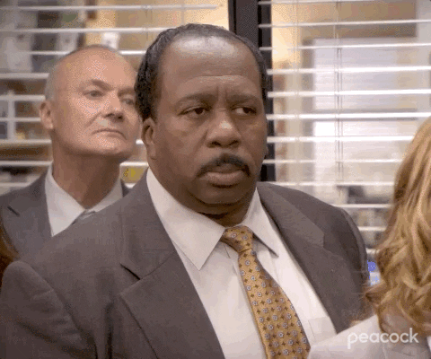

#1. 공항에서의 검문
비행기에서 입국신고서를 적어야 한다고 해서, 가족들의 모든 정보를 동생이 적었다. 동생이 대표로 제출을 했는데 직원분이 일본어로 “~~~no!”라며 동생을 돌이켰다.

우린 줄에서 나와 무슨 뜻일까?? 생각하고 있었다.
나는 바로 옆에 스태프분에게 우리의 입국신고서에 무슨 문제가 있냐고 여쭤봤고, 문제를 못 찾겠다고 하셨다.
그래서 난 다시 동생한테 뭐라하신 분에게 가서 비장하게
"We don’t have a problem. Why didn't you pass our family?"
그분께선 바로 "No problem. You can go, right now."라고 하셨다.
“가도 된다는데?”
엄마아빠는 동생의 얼굴이 강해서 오해받은 것 같다며 웃으셨다.